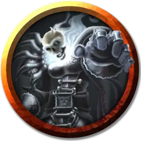

Ужас Халастера
Halaster Horror
Средний Конструкт, нейтральный

Класс Доспеха 20 (латный доспех, щит)
Хиты 60 (8к8 + 24)
Скорость 30 футов, летая 30 футов
| мод | спас | ||
|---|---|---|---|
| СИЛ | 18 | +4 | +4 |
| ЛОВ | 13 | +1 | +1 |
| ТЕЛ | 16 | +3 | +3 |
| мод | спас | ||
|---|---|---|---|
| ИНТ | 10 | +0 | +0 |
| МДР | 10 | +0 | +0 |
| ХАР | 10 | +0 | +0 |
Навыки Восприятие +4
Сопротивление урону дробящий, колющий, рубящий от немагических атак, кроме нанесённых адамантиновым оружием
Иммунитет к урону некротическая энергия, силовое поле, яд
Иммунитет к состояниям окаменение, ослепление, отравление, паралич, очарование, глухота, испуг, ошеломление
Чувства слепое зрение 60 футов (слеп за пределами этого радиуса), пассивное Восприятие 14
Языки понимает язык своего создателя но не говорит.
Опасность 4 (1100 опыта)
Бонус мастерства +2
Особенности
Сопротивление магии. Ужас Халастера совершает с преимуществом спасброски от заклинаний и прочих магических эффектов.
Иммунитет к заклинаниям. Ужас Халастера обладает иммунитетом к трём заклинаниям, выбираемым его создателем. Обычно это конус холода [cone of cold], огненный шар [fireball] и распад [disintegrate].
Природа конструкта. Ужасу Халастера не нужен воздух, еда, питье и сон.
Действия
Мультиатака. Ужас Халастера совершает две атаки посохом.
Посох. Рукопашная атака оружием: +6 к попаданию, досягаемость 5 футов, одна цель. Попадание: 8 (1к8 + 4) дробящего урона.
Описание
Халастер создал по своему подобию четыре металлических конструкта, снабдив их металлическими шлемами, смоделированными по образу его лица, стальными посохами и мантиями, сделанными из сочлененных, накладывающихся друг на друга металлических пластин. "Ужасы Халастера" нападают на любого, кого не сопровождает Безумный Маг или похожее на него существо.